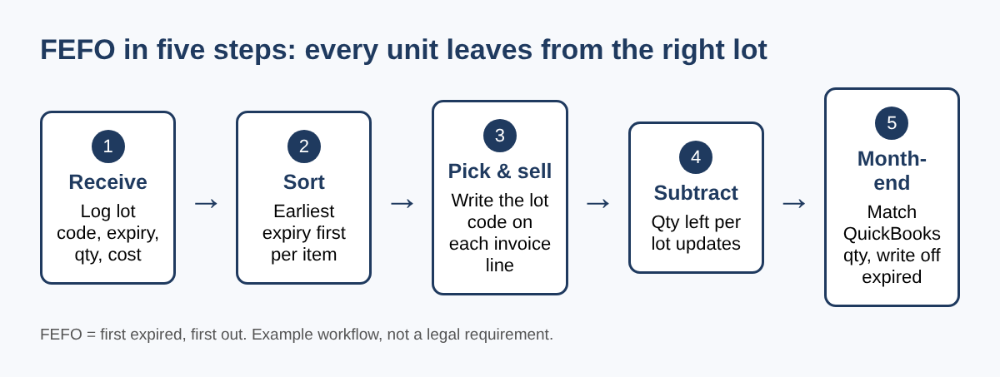
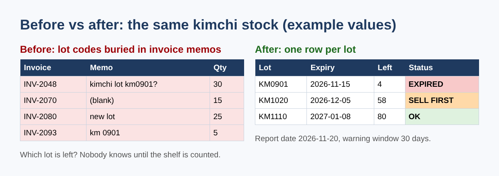
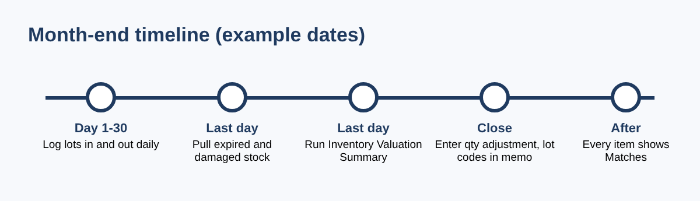

If you sell food, cosmetics, supplements or anything else with a “best by” date, you have probably searched for a way to record lot numbers and expiration dates in QuickBooks. The same question keeps coming back in the QuickBooks Community, and the answer is usually the same: QuickBooks Online has no lot or expiry column on invoice lines, and QuickBooks Desktop only has it in Enterprise with Advanced Inventory. This post shows a method any small business can set up in Excel or Google Sheets today, so you always know which lot to sell first, what has expired, and how to keep your books in agreement.
This article is general educational information, not tax, legal, accounting or food-safety advice.
Wholesalers, grocery and specialty food stores, beauty shops and online sellers often receive the same item in several lots. When lot codes live only in invoice memos, three things go wrong. Older stock expires on the shelf while newer stock is sold. Expired or damaged units are thrown away but never removed from the books, so inventory on the balance sheet is too high. And if a supplier issues a recall, nobody can say quickly which customers received the affected lot.
| Product | Lot and expiry tracking | Common workaround |
|---|---|---|
| Desktop Enterprise with Advanced Inventory | Lot or serial numbers; expiration dates on Platinum and Diamond (2023 and 2024 versions) | Built-in reports such as Inventory Expiration Status |
| Desktop Pro and Premier | None | Memo or description text |
| QuickBooks Online Plus and Advanced | No per-line lot or expiry column | Custom fields (one value for the whole transaction), line descriptions, add-on apps |
A custom field in QuickBooks Online applies to the whole invoice, not to each product line, so an invoice that ships three lots cannot be tracked cleanly. Also keep in mind that QuickBooks values inventory with its own cost method (FIFO or moving average in Online, average cost in Desktop Pro and Premier). Picking the earliest-expiring lot first (FEFO, “first expired, first out”) is a warehouse habit; it does not change how QuickBooks values your stock. That is why the method below compares quantities with QuickBooks, not dollars.

Columns: A Date received, B SKU, C Lot code, D Expiry date, E Qty received, F Unit cost. Then add these formulas in row 2 and copy them down:
=E2-SUMIFS(Sales!D:D,Sales!B:B,B2,Sales!C:C,C2)=IF(D2="","",D2-TODAY())=IF(G2<=0,"Used up",IF(D2="","No expiry",IF(H2<0,"EXPIRED",IF(H2<=30,"SELL FIRST","OK"))))=IF(OR(G2<=0,D2=""),"",COUNTIFS(B:B,B2,D:D,"<"&D2,G:G,">0")+1)Change 30 to the warning window that fits your products. Sell order 1 is the lot to pick first for that SKU.
Example values (invented)
| SKU | Lot | Expiry | Received | Qty left | Days left* | Status |
|---|---|---|---|---|---|---|
| KIM-1KG | KM0901 | 2026-11-15 | 60 | 4 | -5 | EXPIRED |
| KIM-1KG | KM1020 | 2026-12-05 | 80 | 58 | 15 | SELL FIRST |
| KIM-1KG | KM1110 | 2027-01-08 | 80 | 80 | 49 | OK |
*Days left as of an example report date of 2026-11-20. KM1020: 80 received − 25 sold + 3 returned by a customer = 58.
Columns: A Date, B SKU, C Lot code, D Qty, E Type (Sale, Return, Expired, Damaged, Sample), F Customer, G Invoice number. Enter a customer return as a negative quantity so it goes back into the same lot. In QuickBooks, also type the lot code at the start of the invoice line description (for example “KM1020 · Napa kimchi 1kg”), so the code appears on the customer's copy and can be found later.
Two quick checks catch most errors: a lot code that does not exist in the Lots sheet (=IF(COUNTIFS(Lots!B:B,B2,Lots!C:C,C2)=0,"Lot not found","")) and any lot whose Qty left drops below zero, which means a sale was charged to the wrong lot.

Filter the Lots sheet to Qty left > 0 and sort by Expiry date, oldest first. Anything marked EXPIRED is pulled from the shelf; anything marked SELL FIRST goes to the front or gets a discount. To see the dollars at stake, add: =SUMPRODUCT(((I2:I500="EXPIRED")+(I2:I500="SELL FIRST"))*(G2:G500>0),G2:G500,F2:F500).
Run the Inventory Valuation Summary as of the last day of the month. In QuickBooks Desktop it is under Reports → Inventory. In QuickBooks Online, go to Reports and search for “Inventory Valuation Summary”. For each SKU, compare the QuickBooks quantity on hand with =SUMIFS(Lots!G:G,Lots!B:B,"KIM-1KG").
Example values (invented)
| SKU | QuickBooks qty | Lot qty left | Difference | Likely reason |
|---|---|---|---|---|
| KIM-1KG | 148 | 142 | 6 | 6 expired units thrown away, not yet adjusted in QuickBooks |
| RMN-5PK | 300 | 296 | 4 | 4 damaged units not yet adjusted |
| GCJ-500 | 180 | 180 | 0 | Matches |
If QuickBooks is higher, a write-off is usually missing in QuickBooks. If QuickBooks is lower, a receipt is usually missing from your lot log.
QuickBooks Online (Plus or Advanced): select + Create → Inventory qty adjustment (or Inventory → Adjustments → Create adjustment). Choose Adjustment type Quantity only, enter the Adjustment date, pick the Inventory adjustment account (an expense account such as Inventory Shrinkage), choose the product and enter the Change in quantity, for example −6. Write the lot codes in the Memo, then Save and close.
QuickBooks Desktop: Vendors → Inventory Activities → Adjust Quantity/Value on Hand, Adjustment Type: Quantity. Choose the adjustment account, enter the new quantity or the quantity difference, and put the lot codes in the memo.
Run the comparison again. Every SKU should now show a difference of 0. How an inventory write-off is treated on your tax return is a question for your tax professional.

Filter the Sales sheet by one lot code. The Customer and Invoice columns are your contact list, and you can open each invoice in QuickBooks by its number. For food businesses: FDA's Food Traceability Rule page (current as of November 4, 2026) says FDA proposed moving the compliance date to July 20, 2028, and that Congress directed FDA not to enforce the rule before that date. Covered foods need specific traceability records; a spreadsheet like this helps you organize lot codes but is not by itself a compliance system.
You can, but a transaction custom field holds one value for the whole invoice. It works only if every invoice ships a single lot. Putting the lot code in the line description is more practical, with the spreadsheet as the master list.
No. FIFO is a cost method for valuing inventory. FEFO is a picking rule: sell the lot that expires first, even if it arrived later.
Monthly at minimum, and before any physical count or year-end close. Weekly is better for short-dated products such as fresh food.
It depends on your volume, budget and how long you plan to stay on Desktop. Many small businesses find a disciplined spreadsheet or an inventory add-on enough. Compare current pricing and support dates on Intuit's site before deciding.
You can download the ready-made Lot & Expiration Date Tracker (FEFO) 2026 for free in the Free kit download box below (Excel + PDF guide, no sign-up).
Disclaimer: This article is for education only and is not tax, legal, accounting or food-safety advice. Rules and software menus change; confirm with a qualified professional and with current official sources. QuickBooks is a registered trademark of Intuit Inc.; not affiliated with or endorsed by Intuit. All example names and numbers are invented.